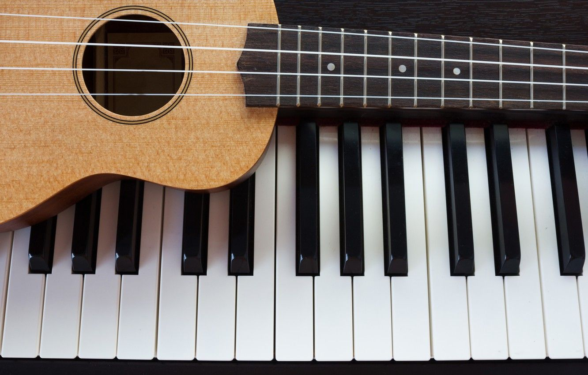

Guitar and Piano

Overview of Music
Music is a powerful form of art that has the ability to evoke a wide range of emotions and memories. It is a universal language that connects people from all walks of life, cultures and backgrounds. From classical to pop, rock, hip hop, and beyond, music encompasses a wide range of genres that cater to different tastes and preferences.
Music is also an important part of many cultural and religious rituals, celebrations, and ceremonies. It has the ability to bring people together, to inspire and uplift, to provide solace and comfort, and to express the deepest of human feelings and experiences.
Whether it's listening to your favorite song, playing an instrument, or attending a concert, music is an essential part of human life.
My interest in learning Music:
Music has always been a passion of mine. I have been listening to various genres of music since I was a child, and over the years, my interest has only grown stronger. Whether it's rock, pop, hip-hop, or classical music, I always find myself drawn to the melodies and rhythms that these genres offer. I love how music can evoke emotions and memories, and I find it to be a powerful form of expression.
I have been playing the guitar for several years now. I started learning the guitar when I was a teenager, and it quickly became one of my favorite pastimes. I enjoy the creative process of learning new songs and experimenting with different chords and techniques. Playing music is a great way for me to relax and unwind after a long day. I recently received an official certification as an amateur guitarist.
I am also interested in the history and cultural significance of music. I enjoy learning about different music genres and the artists who have shaped them. I find it fascinating to learn about the origins of different styles of music and the social and political factors that have influenced their development. I also appreciate the diversity of music from different cultures and how it reflects the unique perspectives and experiences of different people.